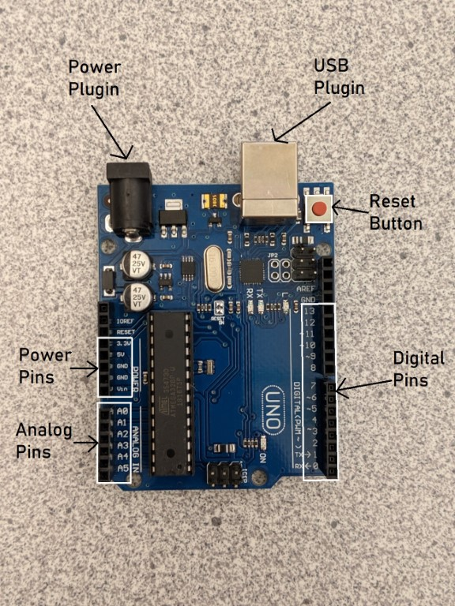
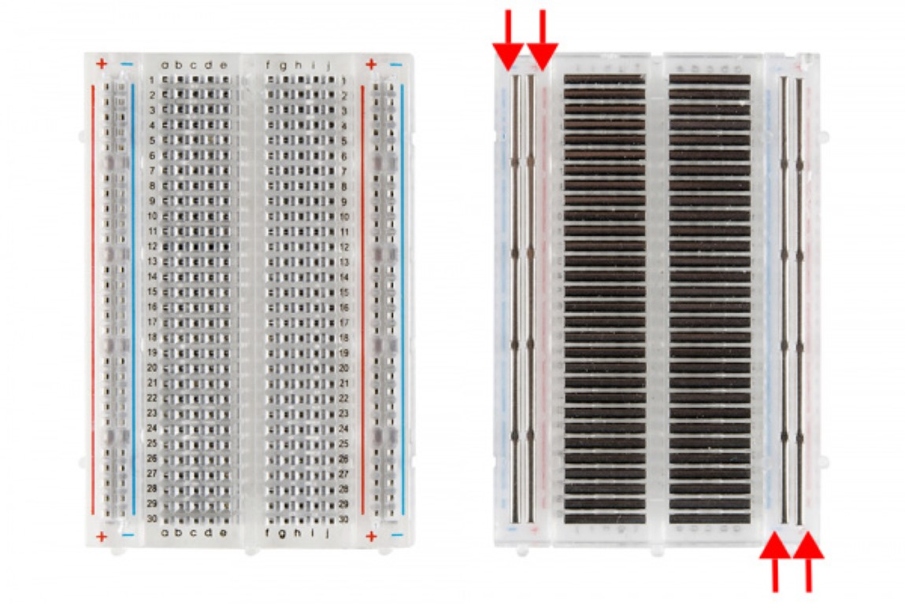

Arduino Interactive Lesson 0: What is Arduino?
If you would like to watch videos instead of reading, watch both of these videos (watch till 5:00 for video 1; 2:18 for video 2) then skip to the activity:
An Arduino is a small computer that can control devices like LED lights, LCD screens, and motors and read information from devices like light sensors and other kinds of sensors. You can think of an Arduino like a brain: your brain can take in information from your eyes, ears, nose, etc. and process it in a way you can understand. Your brain (you) decides what to do with that information. Similarly, an Arduino takes in information from sensors, processes it using your Arduino code, then controls devices like LEDs and motors based on that information.
Anatomy of an Arduino
The Arduino has spots for wires called pins. These are the black bars/holes on the sides of the Arduino. Each pin has a white label to its side telling you what it’s purpose is. The 5V, 3.3V, and GND pins are for power. The pins numbered 0 through 13 are called digital pins and the pins numbered a0 through a5 are called analog pins. An Arduino also has a USB port so you can connect it to a computer and upload code, a small reset button to reset the code on the board, and a power port that can be plugged into a battery holder or wall plugin.
Power Pins
The power pins on an Arduino are like batteries: they supply power to the components connected to your Arduino . The 5V and 3.3V pins are like the positive end of a battery and send a stream of power (either 5 volts or 3.3 volts respectively) through the pin. The 5V and 3.3V pins are always on and cannot be turned off in code. This means that you cannot make a light blink with these pins, but you can turn one on. The GND pins are like the negative end of a battery and receive power so that each component can create a complete circuit.
Input/Output Pins
There are two types of input/output pins on the Arduino, digital (pins 0-13) and analog (pins A0-A5). Digital pins are like light switches: light switches can be flipped either on or off. Digital pins work the same way: they can be turned either on or off within your code. Digital pins can also read whether or not power is going to the pin. This can be useful if you want to read whether a sensor like a button is being pressed/activated or not, but cannot be used to read a sensor that has more than 2 states (like a knob or a slider).
Analog pins are for devices like light dimmers. Light dimmers can make lights get brighter or darker and have more options than on or off. Analog pins can read sensors that are not just on/off and have several states like knobs, sliders, and light sensors. It is important to note that analog pins can only be used for inputs like sensors and cannot be used for outputs like lights and motors.
What is a Breadboard?
A breadboard is a device that can be used to wire electronics together without needing to solder them together (permanently fuse the pieces together). A breadboard usually has two sets of rails on the sides. These rails run power up and down; we will refer to these in the future as columns. This means that the wires that are connected to a column are all connected to each other. Typically, the red column labelled ‘+’ is used for power (so a wire runs from 5V on the Arduino to a point on the ‘+’ column) and the blue/black column labelled ‘-’ is used for ground (so a wire runs from GND on the Arduino to a point on the column). In the middle of the breadboard, power runs left and right. This means that all of the wires in a row are connected to each other. You can see how this works exactly in the image above. Each of the bars in the image is simply a piece of metal that connects a row or column together.
Activity: The Basic Circuit
In this activity, you will construct a circuit with the Arduino that will turn on an LED.
Materials Needed:

Steps
- Put the LED on the breadboard, with the legs in different rows. Remember which end of the LED is the longer side.
- Attach one end of the black (or cool colored) wire to a GND pin on the Arduino and the other end to the column with the “-” symbol.
- Attach one end of a red (or hot colored) wire to the 5V pin and the other end to the column with the “+” symbol.
- Connect one end of the resistor to the same row as the shorter end of the LED and the other end to the column with the “-” symbol.
- Connect one end of the other red wire to the same row as the longer end of the LED and the other end to the column with the “+” symbol on the Arduino. Now plug the Arduino into your computer with the connector cable. The LED should turn on.
Trace the circuit with your finger, starting at the 5V pin. Notice how the electricity travels through each component and ends back at the Arduino, creating a circle. If the circle (circuit) is broken anywhere, the LED will turn off.